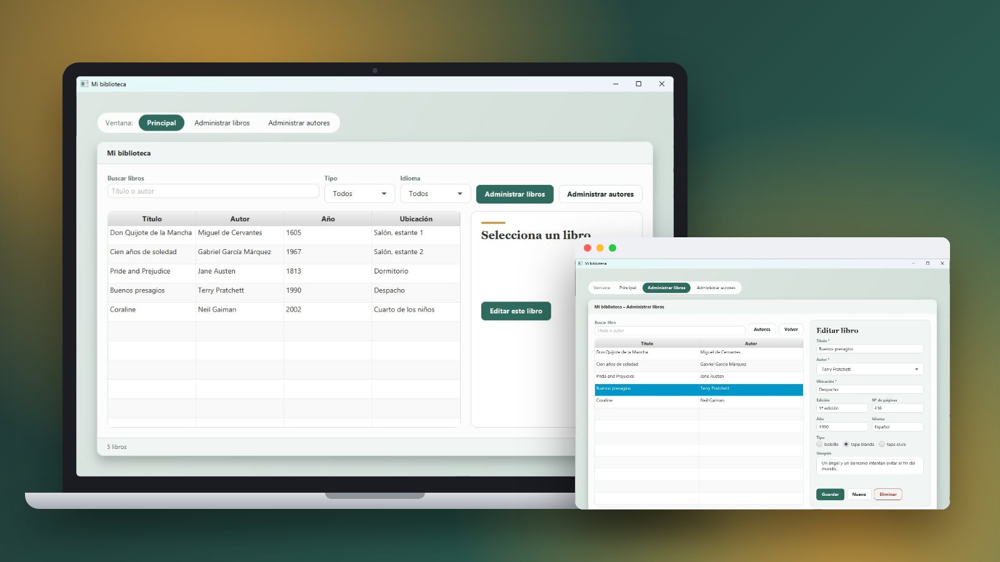
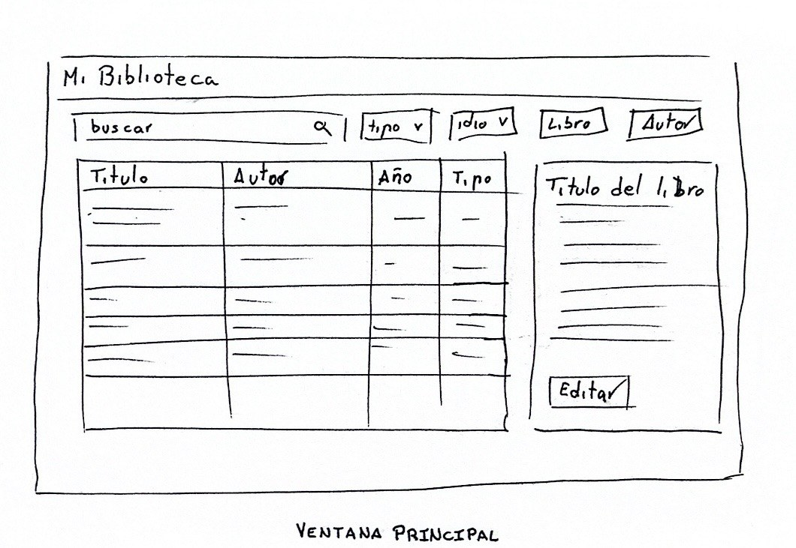
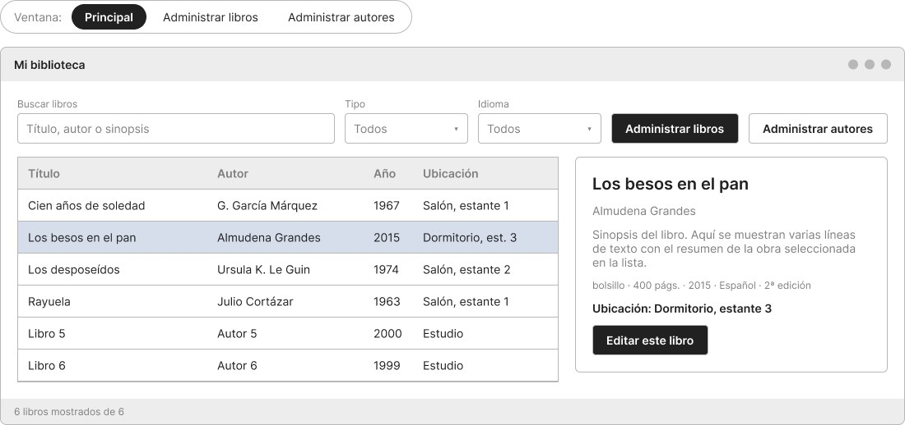
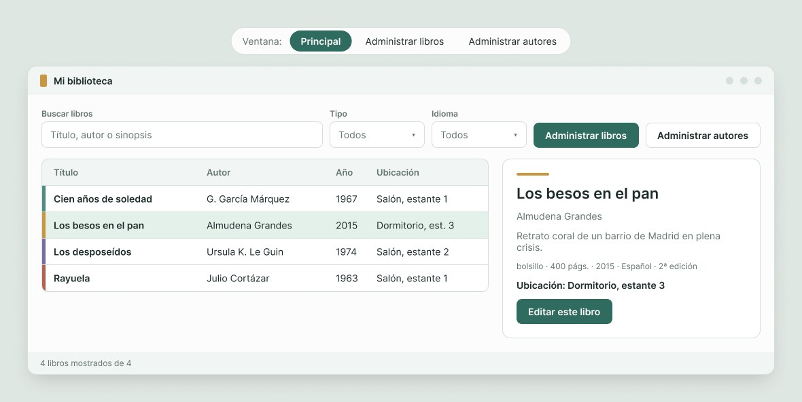
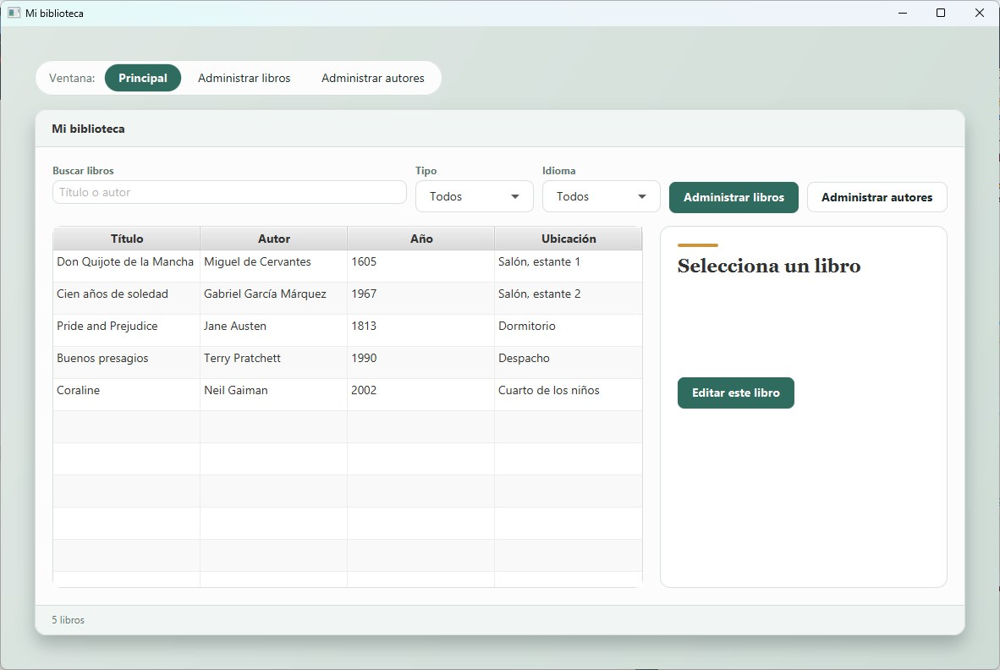
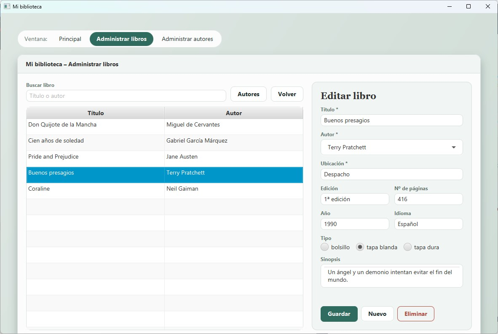
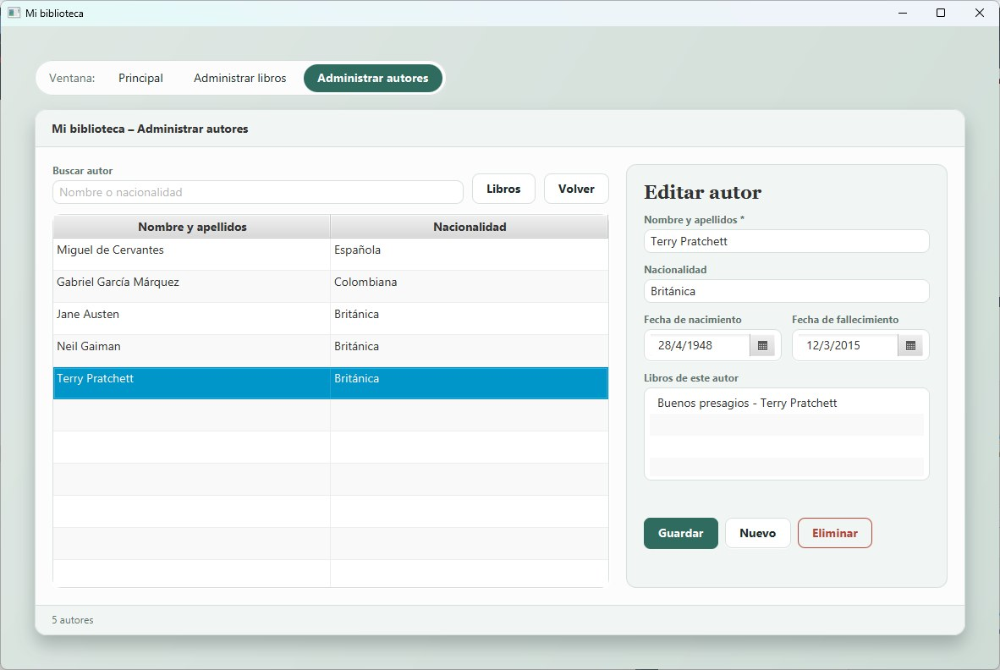
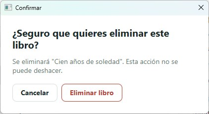

Mi biblioteca
Aplicación de escritorio en JavaFX para gestionar los libros de casa, del boceto a mano al patrón MVC

Sobre el proyecto
Mi biblioteca es una aplicación de escritorio para saber qué libros hay en casa y dónde están. Permite añadir, modificar, eliminar y buscar libros y autores, y ver la ficha de cada libro.
Es una práctica de Desarrollo de Interfaces de 2º de DAM hecha en cuatro partes: diseño en sketch, wireframe y prototipo; vistas con SceneBuilder; modelo; y controladores que completan el patrón MVC. Lo documenté todo en una memoria en LaTeX de 42 páginas.
Del boceto a la aplicación
Sketch
Las tres ventanas a mano en papel
Wireframe
Estructura en grises en Figma
Prototipo
Estilo visual y navegación entre ventanas
JavaFX
Vistas en SceneBuilder, modelo y controladores



Características principales
Buscar y filtrar
Buscador por título o autor, filtros de tipo e idioma y ficha del libro seleccionado.
Libros y autores
Añadir, editar y eliminar, con relación muchos a muchos entre libros y autores.
Validaciones
Campos obligatorios, errores en rojo que explican qué corregir y confirmación antes de eliminar.
Javadoc
Todas las clases y métodos documentados y publicados en GitHub Pages.
Arquitectura MVC: buscar un libro
Vista
Al soltar una tecla, onKeyReleased llama a buscar()
Controlador
Pide al modelo filtrarLibros(texto, tipo, idioma)
Modelo
Devuelve los libros que cumplen las tres condiciones
Vista
El controlador rellena la tabla y la barra de estado
La aplicación




Stack Tecnológico
Lenguaje & UI
- Java 11
- JavaFX 13 + FXML
- SceneBuilder
Diseño
- Sketches a mano
- Figma: wireframes y prototipo
- Verde #2F6B5E y dorado #C8963E
Herramientas
- Maven + IntelliJ IDEA
- Javadoc
- Memoria en LaTeX